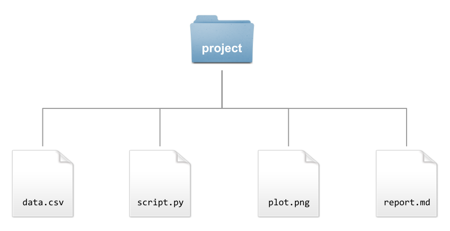
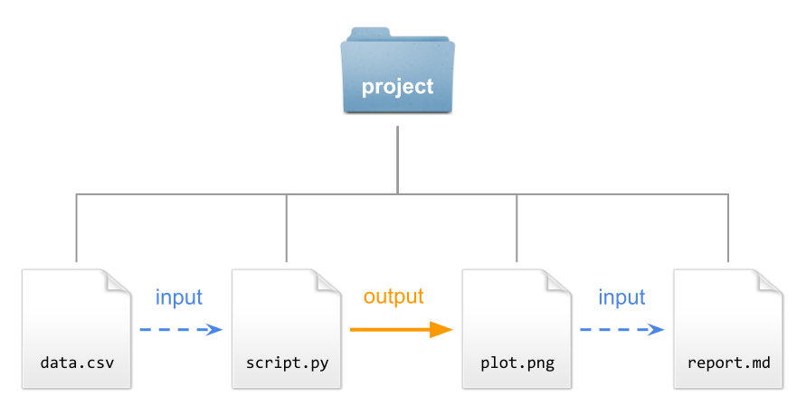
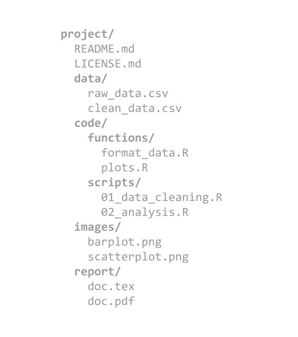
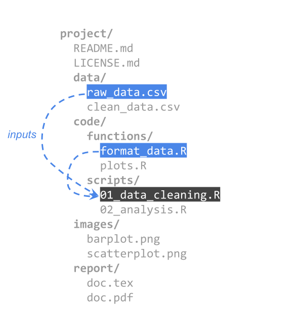
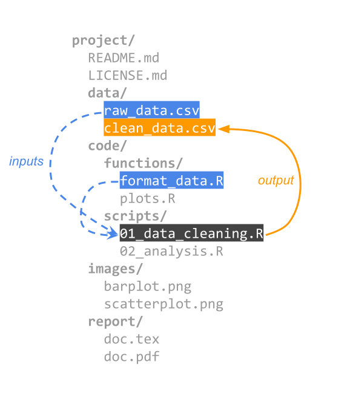
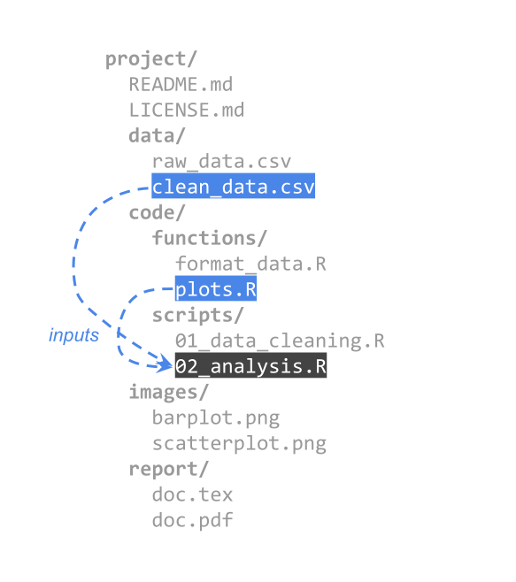
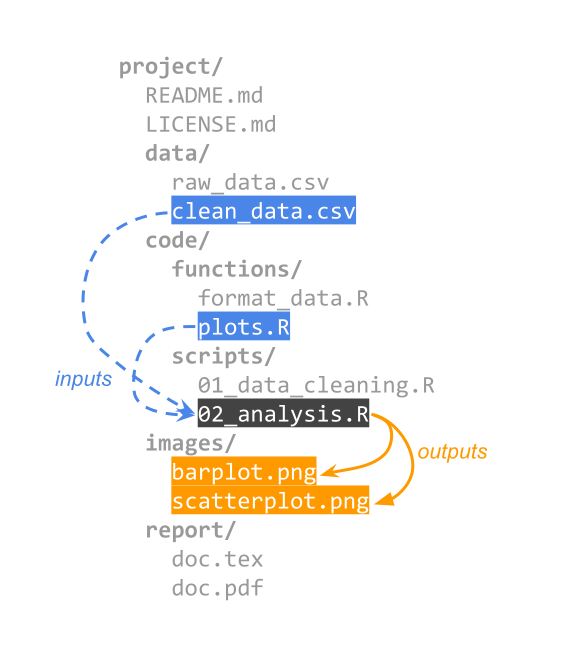
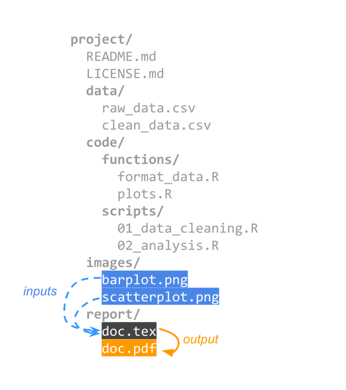
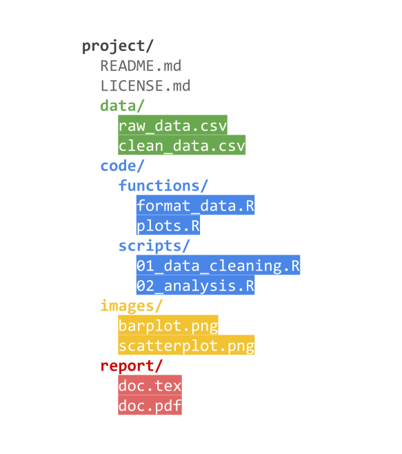
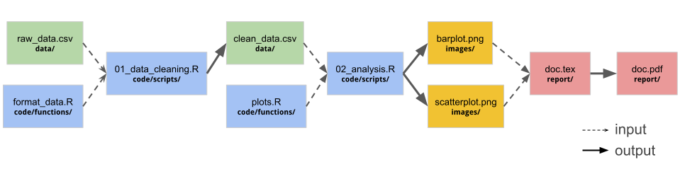

Naming Files
STAT 159: Collaborative and Reproducible Data Science
Project Files
So Far
Many of you are used to work on projects with a very simple file structure, e.g.
How does a data analysis project look like from the files standpoint?
Basic Project Example

Basic Project Example

A less basic project


- This is the typical view we have of a project’s file structure.
- But there’s another way to look at a project’s files.







Network of inputs and outputs

Remember
- You’ll be working with files.
- Some files will be inputs.
- Some files will be outputs.
- Some will play both roles.
Let’s now talk about Naming Files
Naming Files
Don’t! 👎
myreport.qmdJohn's filename uses spaces and punctuation.txtfigure I.pngfig 2.pngplot 3.pngamazingmachinelearningscript.ipynb
Do! 👍
myreport.qmd2026-08-28_sales-report.qmd
John's filename uses spaces and punctuation.txtjohn-filename-looks-better.txt
figure I.pngfig 2.pngfig01_histogram-height.png,fig02_histogram-weight.png
plot 3.pngfig03_scatterplot-height-weight.png
amazingmachinelearningscript.ipynbregularization-models-script.ipynb
Three Principles for file names
- Machine readable
- Human readable
- Plays well with default ordering
Example: Nice file names 😀
2026-05-06_collisions_Berkeley.csv
2026-05-06_collisions_Oakland.csv
2026-05-06_collisions_San-Francisco.csv
2026-05-06_collisions_San-Jose.csv
2026-05-06_stop-data_Berkeley.csv
2026-05-06_stop-data_Oakland.csv
2026-05-06_stop-data_San-Francisco.csv
2026-05-06_stop-data_San-Jose.csv
- Machine readable
- Human readable
- Plays well with default ordering
1) Machine readable
Machine readable
Regular expression and globbing friendly
Avoid:
- spaces
- punctuation
- accented characters
- case sensitivity
Easy to compute on
- deliberate use of delimiters:
-and_
- deliberate use of delimiters:
Example of globbing
2026-05-06_collisions_Berkeley.csv
2026-05-06_collisions_Oakland.csv
2026-05-06_collisions_San-Francisco.csv
2026-05-06_collisions_San-Jose.csv
2026-05-06_stop-data_Berkeley.csv
2026-05-06_stop-data_Oakland.csv
2026-05-06_stop-data_San-Francisco.csv
2026-05-06_stop-data_San-Jose.csv
Deliberate use of delimeters
Deliberate use of _ and - allows us to recover metadata from the filenames.
2026-05-06_collisions_Berkeley.csv
2026-05-06_collisions_Oakland.csv
2026-05-06_collisions_San-Francisco.csv
2026-05-06_collisions_San-Jose.csv
2026-05-06_stop-data_Berkeley.csv
2026-05-06_stop-data_Oakland.csv
2026-05-06_stop-data_San-Francisco.csv
2026-05-06_stop-data_San-Jose.csv
Machine readable
- easy to search for files later
- easy to narrow file lists based on names
- easy to extract info from file names, e.g. by splitting
- avoid:
- spaces in file names
- punctuation
- accented characters
- case sensitivity (e.g., different files named
fooandFoo)
2) Human readable
Human readable
Name contains info on content
Connects to concept of a slug from semantic URLs
01_download-data.qmd02_clean-data.qmd03_univariate-eda.qmd04_run-simulation.qmdhelper01_data-parsers.Rhelper02_summary-functions.R
Human readable
Easy to figure out what the heck something is, based on its name
3) Plays well with default ordering
Order matters
Put something numeric first
Use the ISO 8601 standard for dates:
YYYY-MM-DDLeft pad other numbers with zeros
Chronological order
Logical order
Use the ISO 8601 standard for dates
YYYY-MM-DD
Three Principles for file names
Machine readable
Human readable
Plays well with default ordering
Easy to implement NOW
Dividends multiply as your skills evolve and projects get more complex.
Unix file naming
- Maximum of 255 characters
- Avoid most symbols:
\ / * & % ? $ | ^ ~ < > - Use A-Z, a-z, 0-9, period, underscore, hyphen
- Don’t use a hyphen
-as the first character - Prefer lower case letters:
MyFilevsmyfile- because of case sensitivity
- More important: be consistent and stick to a naming style.
- Good idea to use file extensions
- e.g.
.txt,.csv,.html,.md,.pdf,.jpg
- e.g.
Checklist
- Spend time planning out both folder hierarchy and file naming conventions in the beginning of a project.
- Consider how you or others will look for and access files at a later date.
- Do you think about them by type, location, study or something else?
- Establish a folder hierarchy that aligns with the project.
- Consider all aspects of the project and develop a file naming scheme that includes important metadata.
Checklist (cont’d)
- Consider sorting when deciding what element of the file name will go first.
- File names starting with
YYYYMMwill sort differently than files starting with theMMDDYYYYformat. - Provide a method for easy adoption.
- Consider a readme file in onboarding documentation for new contributors.
- Check for established file naming conventions. Many disciplines have recommendations
Filenames Metadata
1) What information (metadata) is important?
Ideally, pick three pieces of metadata; use no more than five.
This metadata should be enough for you to visually scan the file names and easily understand what’s in each one.
Example: For my images, I want to know date, sample ID, and image number for that sample on that date.
2) Do you need to abbreviate any of the metadata or encode it?
If any of the metadata from step 1 is described by lots of text, decide what shortened information to keep.
If any of the metadata from step 1 has regular categories, standardize the categories and/or replace them with 2- or 3-letter codes; be sure to document these codes.
Example: Sample ID will use a code made up of: a 2-letter project abbreviation (project 1 = P1, project 2 = P2); a 3-letter species abbreviation (mouse = “MUS”, fruit fly = “DRS”); and 3-digit sample ID (assigned in my notebook).
3) What is the order for the metadata in the file name?
Think about how you want to sort and search for your files to decide what metadata should appear at the beginning of the file name.
If date is important, use ISO 8601-formatted dates (
YYYYMMDDorYYYY-MM-DD) at the beginning of the file names so dates sort chronologically.Example 1: My sample ID is most important so I will list it first, followed by date, then image number
4) What characters will you use to separate each piece of metadata in the file name?
Many computer systems cannot handle spaces in file names.
To make file names both computer- and human-readable, use dashes (
-), underscores (_), and/or capitalize the first letter of each word in the file names.Example: I will use underscores to separate metadata and dashes between parts of my sample ID.
5) Will you need to track different versions of each file?
You can track versions of a file by appending version information to end of the file name.
Consider using a version number (e.g.
v01) or the version date (use ISO 8601 format:YYYYMMDDorYYYY-MM-DD).Example: As each image goes through my analysis workflow, I will append the version type to the end of the file name (e.g.
_raw,_processed, and_composite)
6) Write down your naming convention pattern.
Make sure the convention only uses alphanumeric characters, dashes, and underscores. Ideally, file names will be 32 characters or less.
Example: my file naming convention is
SA-MPL-EID_YYYYMMDD_###_status.tif
Examples are
P1-MUS023_20200229_051_raw.tifandP2-DRS-285_20191031_062_composite.tif